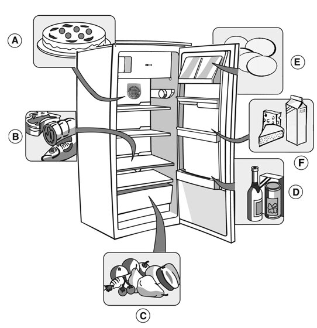
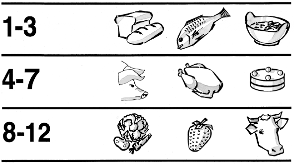

Температурата зависи от стаята, от честотата на отваряне на вратата и от мястото на уреда.

Не поставяйте топла храна в хладилника.Течностите съхранявайте в затворени съдове.

Хладилник - Информация за употребата